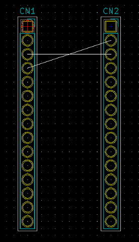

This project template is the basis of an expansion board for the NUCLEO-32 Project not includes a edge PCB, the size of PCB can by custom and connect to the NUCLEO-32 PCB through standard connector of board. Pin out matched with board MB1180.
Supported boards:
General documentation of NUCLEO-32
